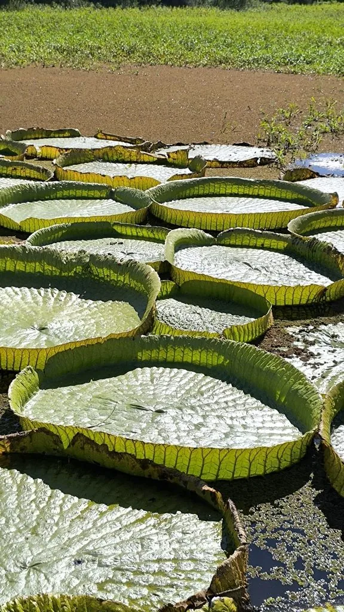

水生植物 · 植物界
克鲁兹王莲 Victoria cruziana

睡莲科王莲属多年生大型水生草本，叶片巨大、边缘上卷如盘，可承重数十公斤，花初白后红，是水景中的“巨无霸”。
- 分类
- 门被子植物门纲木兰纲目睡莲目科睡莲科属王莲属
- 栖息环境
- 南美巴拉那河与巴拉圭河流域的静水河湾与沼泽，喜高温、阳光充足
- 地理分布
- 原产南美巴拉那河流域；中国华南、云南南部水景园引种栽培
- 保护级别
- IUCN 暂无评估；野生种群受水利工程与栖息地破坏影响
物种志
克鲁兹王莲为多年生大型水生草本，具粗壮根状茎。叶片浮于水面，圆形，直径可达 1–2 米，边缘向上卷起形成盘状，叶背密生尖刺，叶脉粗壮呈网状，具很强浮力。花单生，直径 25–30 厘米，第一夜开放时白色，第二夜转为粉红色，第三夜沉入水中；浆果海绵质，种子多数。
本种原产南美洲巴拉那河与巴拉圭河流域，喜高温、阳光充足、水质肥沃的静水环境，在中国华南、云南南部的水景园中栽培。它叶片巨大、承重能力强，成熟的叶盘可承受数十公斤重量，常被用来展示“叶上站人”的奇观。克鲁兹王莲与亚马孙王莲相似，但花萼与叶背的刺更密。栽培需保持 1–2 米水深，并给予充足基肥与光照。
形态与习性
- 叶径可达 1–2 米，边缘上卷如盘
- 花期7–10 月，花初白后转粉红
- 水深1–2 米的静水水体
- 光照强阳性，需充足直射光
- 水分喜静水，忌流水与低温
- 土壤肥沃的塘泥，需充足基肥
- 主要用途大型水景展示、科普教育与湿地造景
趣味知识
- 克鲁兹王莲的叶盘直径可达 2 米，成熟叶片能承受数十公斤重量。
- 它的花第一夜白色、第二夜粉红、第三夜沉入水中，颜色变化明显。
- 王莲叶片背面密布尖刺，可防止鱼类与水禽啃食。
- 它原产南美巴拉那河流域，与亚马孙王莲是近亲，但刺更密。